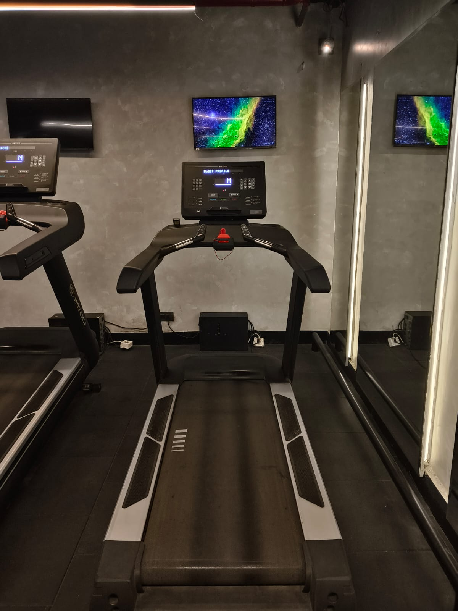
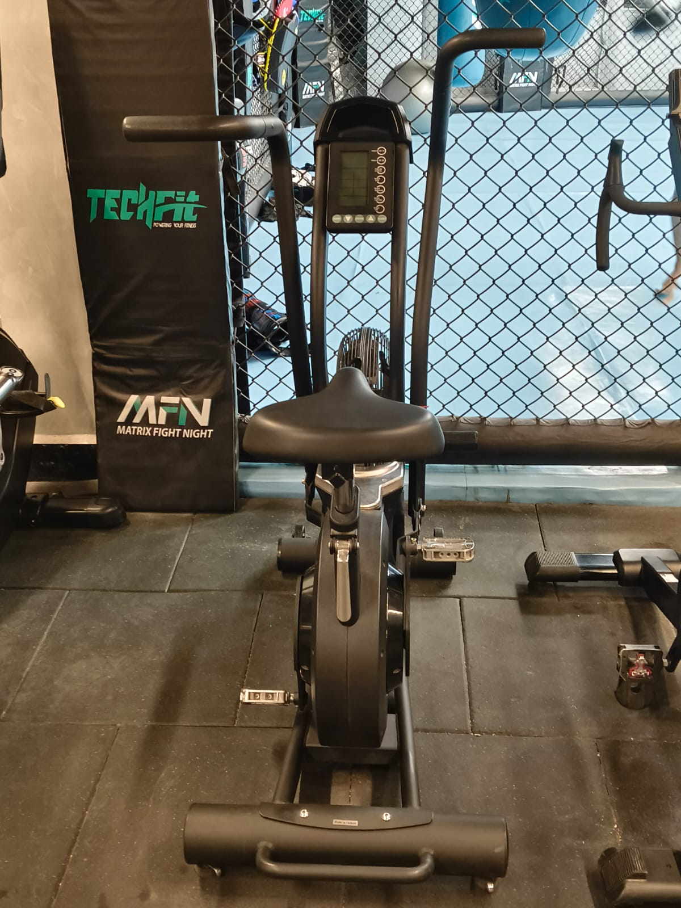

Treadmill
Primary: Quadriceps, Glutes · Secondary: Hamstrings, Calves, Core
How to perform
- 1Step onto the treadmill and attach the safety clip if available.
- 2Start at a slow walking speed. Keep your posture upright and shoulders relaxed.
- 3Walk or run naturally, swinging your arms lightly. Avoid holding the side rails continuously.
- 4Increase speed or incline gradually based on your fitness level. Maintain steady breathing throughout.
Recommended
15 to 30 Minutes

Air Bike
Primary: Quadriceps, Glutes · Secondary: Hamstrings, Calves, Core
How to perform
- 1Adjust the seat height so your knees are slightly bent at the bottom of the pedal movement.
- 2Place your feet on the pedals and grip the moving handles firmly.
- 3Start pedaling steadily while pushing and pulling the handles together.
- 4Keep your core tight and maintain a smooth rhythm. Increase speed gradually for higher intensity.
- 5Slow down gradually before stopping completely.
Recommended
10 to 20 Minutes

Elliptical Cross Trainer
Primary: Quadriceps, Glutes · Secondary: Hamstrings, Calves, Core
How to perform
- 1Step onto the pedals and grip the moving handles comfortably.
- 2Start moving slowly with a smooth stepping motion.
- 3Push and pull the handles naturally while keeping your posture upright.
- 4Maintain a steady rhythm and adjust resistance or incline as needed.
Recommended
15 to 30 Minutes

Upright Cycle
Primary: Quadriceps, Glutes · Secondary: Hamstrings, Calves, Core
How to perform
- 1Adjust the seat height so your knees remain slightly bent at the bottom of the pedal stroke.
- 2Sit upright and place your feet securely on the pedals.
- 3Start pedaling at a comfortable pace, keeping your back straight.
- 4Gradually increase resistance or speed as you become more comfortable.
Recommended
15 to 30 Minutes